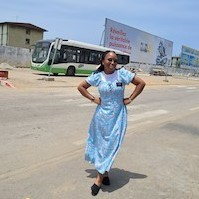

Ayanda Dlamini | WDD 130

Hi! my name is Ayanda Senanile Dlamini. I'm from Swaziland. I love KFC and listening to music, I love speaking french as well and I love Spanish, hoping that one day I will be able to learn and speak it fluently. I love watching movies as well.One the things I love about myself is that I am a quiet person yet sociable, I love making friends and I happen to have a lot of them. Mostly, I love the gospel and all it's teachings. Mostly, I love the Temple, it is such a nice and peaceful place to be at, unfortunately we do not have the temple in our country and we have to travel to South Africa to attend it but it is always a fun experience. well, I got a wonderful opportunity to serve in the most beautiful country Ivory Coast, and I fell inlove with the people there and mostly their food. My favourite Ivorien food is garba and alloco.